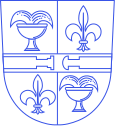
Zajímavější Studénka
Pár nápadů do participativního rozpočtu 2027, jak udělat Studénku zajímavější a hezčí.
Pravidla hry
Nápady
1. Socha na náměstí Republiky
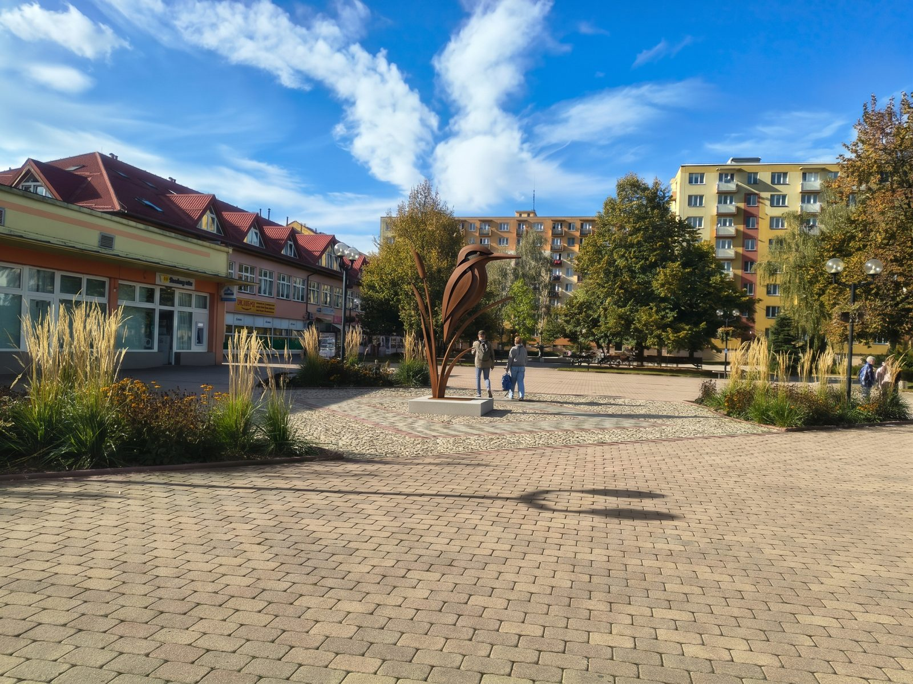
Vizualizace: ledňáček z cortenu na rozetě náměstí Republiky. Ledňáček je symbol Poodří, ladí s muralem v podchodu.
První kus současného veřejného umění ve Studénce. Soutěž pro studenty výtvarných škol, socha na rozetě uprostřed náměstí, třeba ledňáček nebo jiné zvíře z Poodří. Studentské dílo nemusí stát moc. Dražší bude osazení: základ v dlažbě, jeřáb, ukotvení. Nová kašna se staví na místě té staré, takže se nepletou.
- náměstí dostane něco, kvůli čemu se tam člověk zastaví
- studenti umělecké školy dostanou šanci tvořit pro město
- osazení do dlažby může být dražší než socha sama
2. Kryté posezení
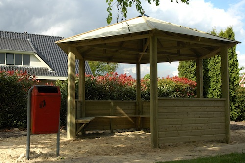
Ilustrace: kryté posezení v nizozemské obytné čtvrti (Drenthen).
Kryté místo, kde se dá posedět, aniž by člověk musel něco kupovat: střecha, lavice naproti sobě, světlo, zásuvky na nabíjení, třeba velká houpačka nebo síť. V Nizozemsku tomu říkají JOP a mají je v katalogu.
- místo k posezení i za deště, bez útraty
- levné, katalogové řešení
- potřebuje dobré místo, aby nikoho nerušilo
Kde: prázdná plocha u Kotvice, nebo u koupaliště a BMX kopečků.
3. Disc golf

Ilustrace: disc golf v Poličce, postavený z participativního rozpočtu (Deník).
Menší hřiště na 4–6 košů v Butovicích, mezi Budovatelskou a Tovární: hájek se vzrostlými stromy a vedle něj trávník mezi paneláky, dohromady asi 3,7 ha. Pozemky patří městu a nejsou památkově chráněné. V Česku je přes 220 hřišť, v Novém Jičíně mají přes 7 400 zaznamenaných kol a v Hustopečích si lidi po čtyřech letech odhlasovali rozšíření.
Zámecký park by byl na disc golf nejlepší, ale je to kulturní památka. Každou úpravu musí schválit památkáři v Bílovci, park leží v archeologickém území a stojí v něm památná Zámecká lípa. Jde to, disc golf v chráněném zámeckém parku mají třeba v Moravském Krumlově, Pacově nebo Zbirohu, ale vyřizování může trvat měsíce. Proto nejdřív Butovice, a když se to chytí, rozšíření do zámeckého parku.
- prokazatelně se hraje
- skoro žádná údržba
- v Butovicích pozemky patří městu, bez památkářů
- Bílovec má nové hřiště 8 km odsud
- v Butovicích je blízko silnice, dětské hřiště a paneláky, koše se musí rozmístit bezpečně
- město chystá studii regenerace sídliště Butovice a na části trávníku plánuje parkoviště, musí to s tím ladit
4. Staré hřiště ve Studénce 1
Malé hřiště za kostelem a hřbitovem, kde se kdysi hrál fotbal. V územním plánu je pořád vedené jako sportoviště (asi 35 × 15 m). Mohla by stačit obecná revitalizace: nové branky, posekat, lavička.
Pozemek patří městu. Hrálo by se tu? Napište, jestli byste sem chodili. Odvážnější nápady pro toto místo jsou níž v části Místa.
- pozemek patří městu a je vedený jako sportoviště
- levné, když stačí branky
- jiná hřiště už ve městě jsou
Místa: prázdného prostoru je dost, chybí zajímavé věci
Prošel jsem pět míst, kde je hodně volného prostoru a málo důvodů se tam zastavit. Ke každému jsem sepsal několik nápadů, i odvážných, ať je z čeho vybírat. Platí jednoduché pravidlo: čím dál od centra, tím víc musí místo stát za cestu.
U každého nápadu je hrubý odhad ceny první etapy do 390 000 Kč. Větší nápady se dají stavět po etapách v dalších letech. Ceny jsou odhady podle srovnatelných projektů, ne nabídky firem. Napište, co by vás sem vytáhlo.
Kotvice
centrumbetonová plocha před nákupním střediskem s poštou, 2 minuty od náměstí
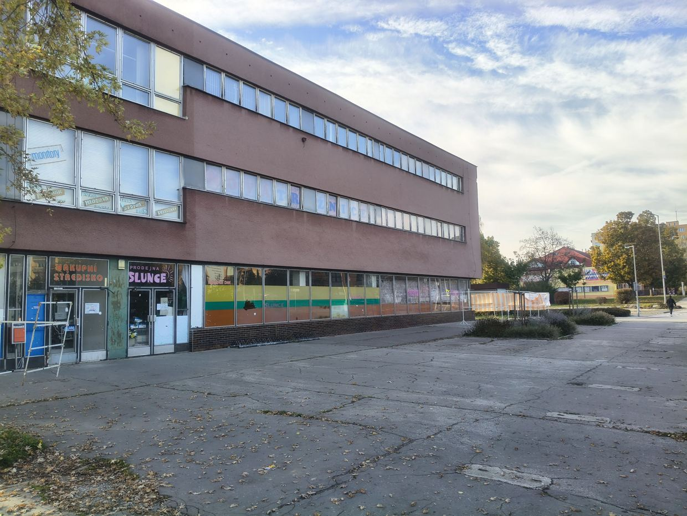
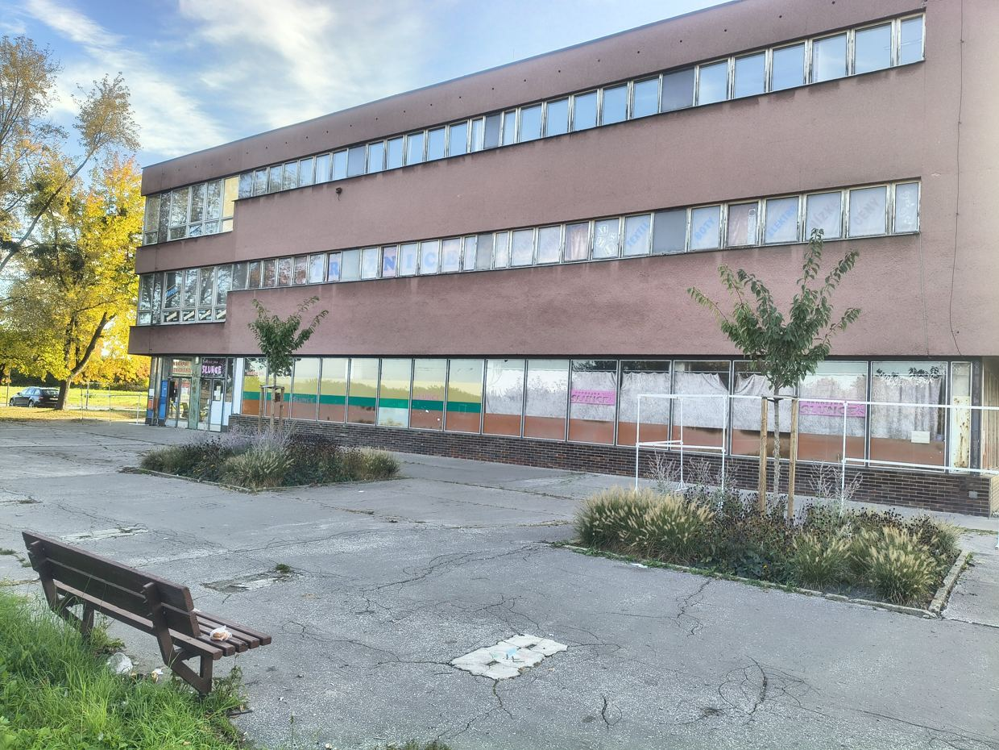
Kotvice dnes: velká popraskaná plocha, dva malé záhony, jedna lavička.
- Komu patří plocha před budovou. Je rozdělená na několik parcel a vlastníka se zatím nepodařilo ověřit. Pokud nepatří městu, z participativního rozpočtu to nepůjde.
- Fasáda budovy městu nepatří, takže mural na ni zatím nejde.
- Starší studie centra (2016) počítá s přestavbou Kotvice. Zatím jen na papíře.
★ Dešťová zahrada místo panelů~330–360 tis.
Vybourat asi 150 m² popraskaných panelů a udělat záhon, který zachytává dešťovou vodu, s lavičkami kolem. V Nizozemsku se z vytrhávání dlažby stala celostátní soutěž (tegelwippen).
Příklad: Ruprechtov, 116 m² dešťových zahrad s posezením za 372 tis. (Estav), Utrecht. Na větší etapu se dá získat dotace.
★ Stromový ostrov s kruhovou lavicí~190–250 tis.
Dva stinné stromy do volné půdy a kolem nich kruhové lavice. Na rozdíl od náměstí tu není potřeba drahý kořenový prostor pod dlažbou, stačí rozbít panely.
Zelená pergola~250–340 tis.
Pergola s popínavkami nad lavičkami. Zakryje hnědou fasádu, aniž by se jí dotkla, a v létě dá stín.
Další nápady pro Kotvici (5)
Barevná plocha~120–220 tis.
Velká malba na zem, 300–500 m². Rychlé, levné, vidět z oken paneláků. (Bloomberg Asphalt Art)
Hravá cesta na poštu~120–200 tis.
Nízké herní prvky a namalované hry po cestě, aby děti nákup s rodiči bavil.
Poesiomatcena na dotaz
Kliková „mluvící trouba“ bez elektřiny, která hraje místní nahrávky: básně, vzpomínky pamětníků, zvuky Poodří. V Česku je jich asi 70, nejblíž v Příboře. (poesiomat.cz)
Světelné girlandy~110–220 tis.
Řetězy žárovek na sloupech nad plochou. Večer z toho bude místo, ne jen průchod.
Knihobudka a pítko~30–300 tis.
Malé doplňky k ostatním nápadům. U pítka ověřit, jestli ho už nebude mít nová kašna na náměstí.
Kombinace „Zelená Kotvice“ (~340–370 tis.): dešťová zahrada, jeden stromový ostrov a knihobudka.
Park u Budovatelské
centrumButovice, mezi Budovatelskou a Tovární, asi 3,7 ha, pozemky města, 13 minut pěšky od náměstí
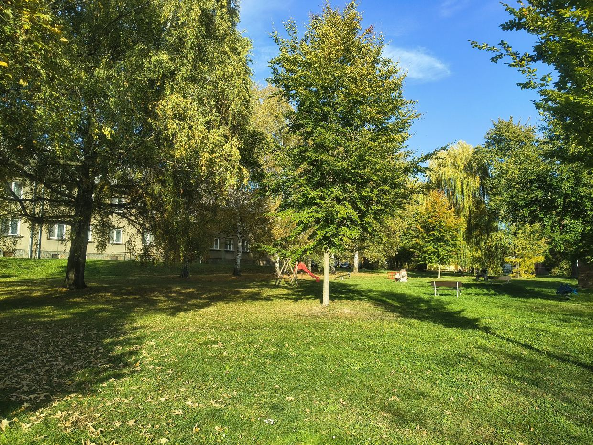
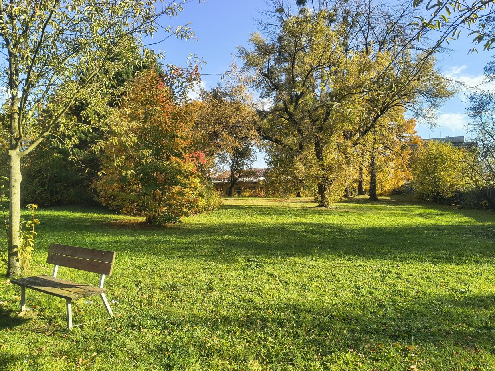
Hezký klidný park, jen v něm skoro nic není.
- Na Tovární („u Krytu“) vznikne psí hřiště z participativního rozpočtu 2026 (rada města 14. 5. 2026). Přesné umístění zatím není zveřejněné.
- Na části trávníku město plánuje parkoviště.
★ Disc golf na 6 košů~265–290 tis.
Šest jamek mezi stromy. Koše aspoň 20 m a odhodiště aspoň 15 m od hřiště, cest a domů, hází se podél paneláků, nikdy proti nim. Rozmístění se musí přizpůsobit psímu hřišti: žádné hody přes plot ani směrem k němu. Polička postavila 6 košů za necelých 200 tis. (2023).
Příklady: Polička, Bystřice pod Hostýnem, Praha 12 Kamýk (participativní rozpočet).
★ Koberec krokusů pod stromy~100–300 tis.
Desetitisíce cibulek pod stromy, na jaře celý park fialový. Údržba skoro nulová, každý rok se to rozrůstá. Při společném sázení s dobrovolníky je to výrazně levnější. Narcisy ne u psího hřiště, jsou pro psy jedovaté.
Příklady: Frýdek-Místek, Ostrava.
Další nápady pro Budovatelskou (2)
Piknikový palouk~120–200 tis.
Pevné piknikové stoly pod stromy, pro rodiny i pejskaře po procházce.
Pejskařský koutek~60–100 tis.
Stín a lavičky u psího hřiště, mimo jeho plot. Jen to, co už nebude v projektu psího hřiště.
Kombinace: disc golf a krokusy (~365–390 tis.).
BMX kopečky u koupaliště
kousek za centremvedle biotopu, ohniště, lanové dráhy a workoutu, 6 minut od náměstí
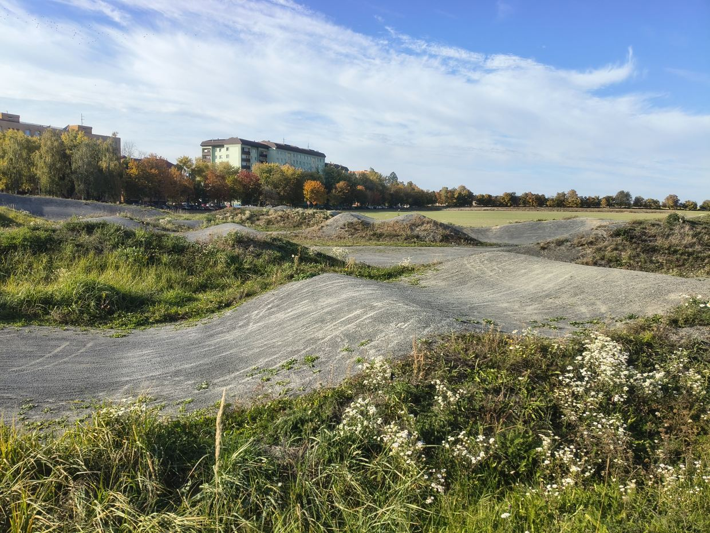
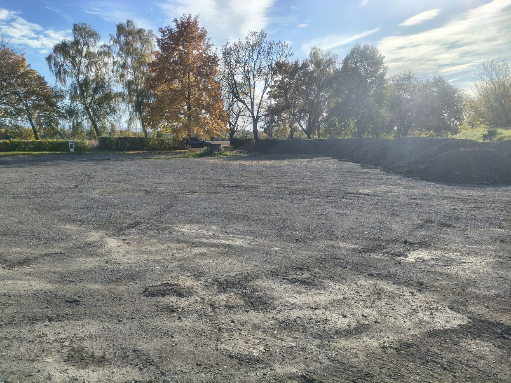
Kopečky zarůstají, vedle je prázdná štěrková plocha.
- Studie letního stadionu už počítá se skateparkem, workoutem, dětským a dopravním hřištěm, takže ty sem nepatří.
- Pod zemí je hodně sítí. Lanovou dráhu tu město umisťovalo „velmi složitě“, takže to chce mapu sítí.
- Štěrková plocha slouží jako parkoviště koupaliště a město tu plánuje „Parkoviště u biotopu“. Vlastník plochy ani kopečků (BMX klub?) zatím není ověřený. Nejdřív zjistit, kde vůbec je městský pozemek.
★ Klouzačka z kopce~330–380 tis.
Dlouhá nerezová skluzavka zapuštěná do travnatého svahu, nahoru po schodech z pražců. Baví malé děti i dospělé, údržba skoro žádná. V Praze na Julisce letos otevřeli čtyřicetimetrovou a hned je to rodinný hit.
★ Trampolínová stezka~330–360 tis.
Tři trampolíny zapuštěné do země za sebou, skáče se „po stezce“. Zdarma a venku jich je v Česku málo.
★ Elektrický gril zdarma~300–370 tis.
Veřejný gril na tlačítko vedle ohniště, jak je to běžné v Austrálii. Funguje i v době zákazu ohňů, nekouří a nic se nemusí rezervovat.
Další nápady pro kopečky (8)
Lanovka přes kopečky~250–390 tis.
Dvacetimetrová dětská lanovka. Nejtěžší umístit kvůli sítím. (ceník)
Houpačkový háj~250–290 tis.
Velké hnízdové houpačky, na které se vejde celá rodina, i dospělí.
Hřiště s vodou a pískem~250–390 tis.
Ruční pumpa, žlábky a písek. Potřebuje pitnou vodu a souhlas hygieny.
Pingpongový ostrov~300–350 tis.
Tři venkovní stoly na zpevněné ploše. Hrají babičky s vnoučaty i teenageři.
Pétanque a velké hry~200–330 tis.
Dvě až tři hřiště na pétanque, velké šachy, lavičky. Pro seniory i rodiny.
Poodří golf~300–390 tis.
Betonový minigolf zdarma, jamky ve tvaru meandru, ledňáčkovy nory nebo bobří hráze.
Vlnovka pro nejmenší~150–300 tis.
Okruh pro odrážedla vedle BMX kopečků, aby se nejmenší naučili jezdit.
Okruh pro RC auta~50–150 tis.
Hliněná dráha se skoky pro auta na dálkové ovládání. Odvážné a pro úzkou skupinu, ale nikde v okolí není.
Park u požární nádrže pod kostelem
Studénka 1borovice, trávník, nádrž a cesta nahoru ke kostelu, půl hodiny pěšky od náměstí, vede tudy cyklotrasa 6011
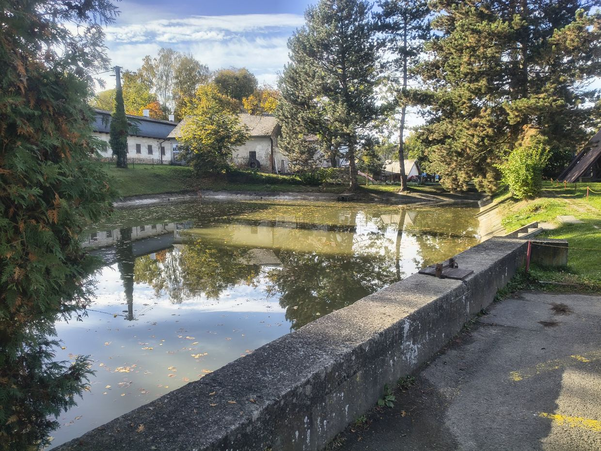
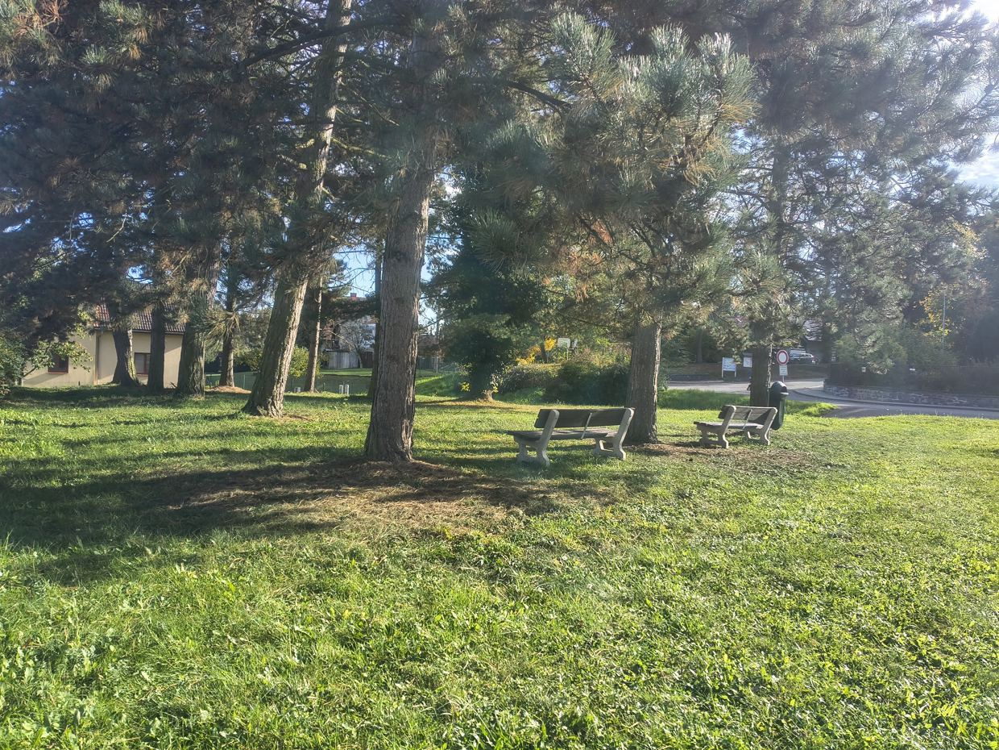
Krásný borový háj, ve kterém je jen pár laviček.
- Nádrž je požární voda města, takže se nesmí nic stavět do vody ani blokovat místo, odkud čerpají hasiči. Jde jen o věci na břehu nebo plovoucí a odnímatelné, a to po dohodě s hasiči.
- Na ceduli je zákaz psů.
- Město chystá projekt parkoviště „U Rybníčku“ a v letech 2028–29 opravu ulice, takže ověřit, kde přesně bude.
- Leží v území s archeologickými nálezy, takže výkopy se musí předem ohlásit. To je běžné.
★ Hrající houpačky~330–390 tis.
Houpačky pod borovicemi, které při houpání hrají tóny. Když se houpe víc lidí najednou, skládá se z toho hudba. V Montrealu je to jarní hit už od roku 2011. V Česku nic takového není. Večer se vypínají, kvůli sousedům.
★ Lesní obr~200–390 tis.
Obří postava ze dřeva schovaná mezi borovicemi, jako trollové dánského umělce Thomase Dambo, za kterými lidi cestují po celém světě. Originál je pro nás moc drahý, ale místní řezbář nebo student umělecké školy to zvládne. Lehnout si mu do dlaně, prolézt mu nohama.
Světlušky v borovicích~250–380 tis.
Stovky drobných solárních světýlek v trávě a nízko pod borovicemi, večer to vypadá jako roj světlušek. Ohled na sousedy a na netopýry.
Inspirace: Field of Light, Bruce Munro.
Další nápady pro park u nádrže (8)
Bruslení na nádrži~60–120 tis.
Jak v Nizozemsku: v zimě se měří led, tabule ukáže naměřenou tloušťku a lavička na přezouvání. Místo čerpání se ohradí. Bruslí se na vlastní nebezpečí, mrazivých dní je u nás málo.
Plovoucí vánoční strom a lampionová plavba~90–180 tis.
V adventu plovoucí stromek na nádrži, v létě plavba lampionů. Plove a jde odnést, takže hasičům nepřekáží.
Hnízda v korunách~250–380 tis.
Velké sítě zavěšené přímo mezi borovicemi, kde se dá ležet a houpat. Stromy jen zkontroluje arborista. (Francie)
Pétanque pod borovicemi~120–200 tis.
Dvě hřiště jako na francouzské návsi, s krabicí na koule. Pro sousedy a seniory.
Čítárna pod korunami~150–250 tis.
Čtecí síť a knihovnička v korunách, v létě program s knihovnou. (Slovinsko)
Sakurová cesta ke kostelu~100–250 tis.
Japonské třešně podél cesty od nádrže ke kostelu. Pár týdnů v roce růžový tunel, který si každý vyfotí. V okolí nic podobného není.
Korejská bosá stezka~150–300 tis.
V Koreji teď frčí hliněné cesty na chození naboso (maenbal-geotgi), města jich staví stovky. Okruh z hlíny a různých povrchů mezi borovicemi. Nejbližší bosá stezka je ve Valašském Meziříčí, hliněná korejská u nás žádná. Potřebuje kohoutek na opláchnutí nohou, z nádrže to nejde. (Incheon, Valašská bosá stezka)
Čtecí stezka pro děti~60–150 tis.
Stránky dětské knížky na stojanech podél cesty ke kostelu, knihovna je jednou za čas vymění. V USA tomu říkají StoryWalk. (Montpelier)
Staré hřiště za kostelem
Studénka 1, nejdáltráva mezi topoly, staré branky, kolem pole a výhled na Beskydy, asi 35 minut pěšky od náměstí
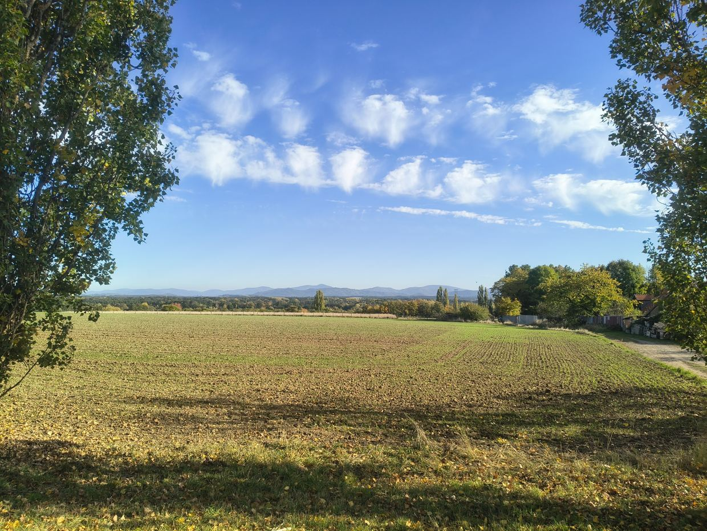
Výhled ze starého hřiště: přes pole až na Beskydy.
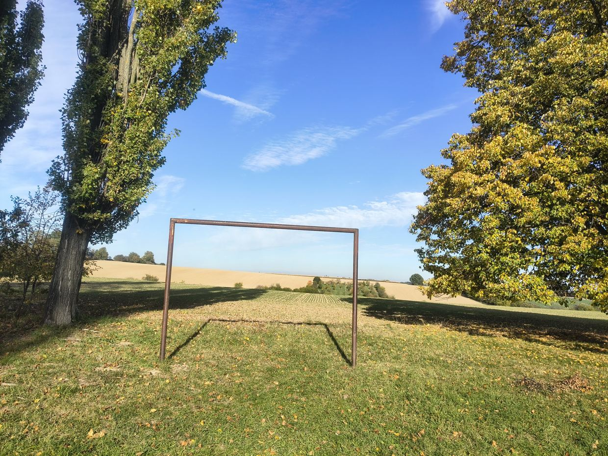
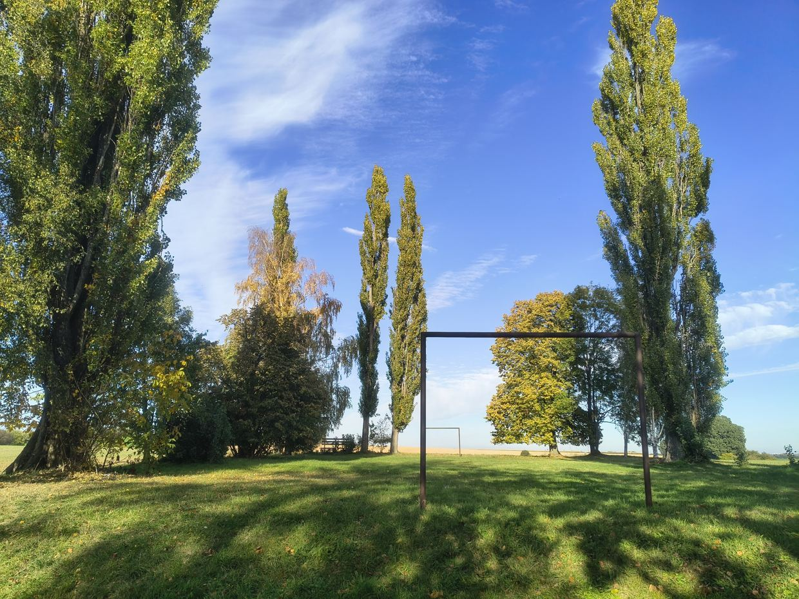
Topoly, staré branky a otevřený obzor.
Zajímavost: podle výpočtu leží Lysá hora z hřiště zhruba ve směru, kde 21. prosince vychází slunce. O zimním slunovratu by tedy slunce mělo vycházet z nejvyšší hory Beskyd. Ověřím to fotkou letos 21. 12. Několik nápadů na tom staví.
- Městu patří jen samotné hřiště (asi 1 200 m²). Topoly stojí většinou na okolních pozemcích, které městu nepatří.
- Kostel kolem sebe nemá ochranné pásmo a nejde o chráněnou krajinnou oblast.
- Asi 100 m odsud se plánuje rozšíření hřbitova, takže nic hlučného.
- Ověřit, jestli vyšší stavby nevadí stavebnímu úřadu a ochraně krajinného rázu.
★ Slunovratový kruh pod Lysou horou~300–380 tis.
Kruh z kamenů, jejichž průzory míří tam, kde vychází a zapadá slunce o slunovratech a rovnodennostech. V zimě tedy přímo na Lysou horu. Kolem nízká deska se jmény všech viditelných vrcholů Beskyd. Každý rok 21. prosince je pak důvod přijít, a to bez jakékoli obsluhy.
Příklady: Jihočeský Stonehenge u Holašovic, Goseck (DE). V okolí jsem nic podobného nenašel.
★ Obří lavice s výhledem na Beskydy~300–360 tis.
Lavice ve výšce kolem dvou metrů, dospělí na ní sedí s nohama ve vzduchu jako děti. Výhled je přes obilí i kukuřici, před ní deska se jmény vrcholů. V Itálii jich je přes 200 a jezdí se k nim jako na výlet. Oficiální italskou značku z veřejných peněz zaplatit nejde, vlastní lavice ano.
Big Bench Community Project, obří židle a houpačky ve Vrbně pod Pradědem.
★ Houpačka nad polem~190–360 tis.
Vysoká houpačka, která se houpe směrem do polí a na hory. Bezpečná, certifikovaná verze „houpačky na konci světa“ z Ekvádoru. Vrbno pod Pradědem dalo za tři taková místa na fotky 220 tisíc.
★ Telefon do větru~60–150 tis.
Telefonní budka uprostřed louky s nezapojeným telefonem, ze kterého lidé „volají“ svým zemřelým blízkým. Vznikl v Japonsku po tsunami, přijelo k němu přes 30 tisíc lidí a dnes je takových budek na světě přes 400. V Česku zatím žádná. Levné, dá se spojit s jiným nápadem.
Další nápady pro staré hřiště (11)
Hvězdná louka~220–320 tis.
Kruh pevných lehátek na pozorování hvězd, kámen mířící na Polárku, mapa oblohy. Žádné lampy. Na Perseidy a Geminidy akce s astronomy. (Dark Sky Discovery Sites)
Labyrint v trávě~65–295 tis.
Klasický labyrint vysekaný do trávníku jako na anglických loukách, nebo vyskládaný z kamenů jako ve Skandinávii. Na konci výhled na hory. Levný doplněk. (turf maze)
Zpívající topoly~250–390 tis.
Ocelová socha, která zpívá ve větru, a na poli fouká skoro pořád. Soutěž pro studenty uměleckých škol. (Singing Ringing Tree, Burnley)
Komora s výhledem (camera obscura)~180–330 tis.
Malá tmavá chatka, kde čočka promítá živý obraz polí a Beskyd na bílý stůl, bez elektřiny. (The Reveal, Essex)
Živá katedrála~200–330 tis.
Stromy vysázené do půdorysu kostela sv. Bartoloměje: kmeny jako sloupy, koruny jako klenba. Začíná se vrbou, aby to fungovalo hned. Každý rok je cennější. (Tree Cathedral)
Nocoviště~250–300 tis.
Otevřený přístřešek na jednu noc zdarma, jak je to běžné ve Skandinávii. Pro lidi z Ostravy, kteří přijedou vlakem. Riziko večírků a nepořádku. (přístřešky Lesů ČR)
Vyhlídkové molo~280–390 tis.
Vyvýšená dřevěná plošina nad okrajem pole, navržená architekty jako odpočívadla podél norských vyhlídkových silnic. (Norwegian Scenic Routes)
Drobnosti~10–40 tis.
Starou branku natřít a nasměrovat tak, aby v ní byla Lysá hora jako v rámu obrazu. Stožár s větrným rukávem a drakiáda.
Vesnická houpačka~200–390 tis.
Estonská külakiik: obří dřevěná houpačka pro celou skupinu, kolem které se v Estonsku slaví svatojánská noc. Silný zážitek, ale náročné na bezpečnost a pojištění. (Village swing)
Zvonička přání~150–350 tis.
Moderní obdoba moravské zvoničky: malý zvon, na který může zazvonit každý, kdo si něco přeje. Hodí se kousek od kostela, v okolí jsem nic podobného nenašel.
Místo ztišení~100–350 tis.
Současná „Boží muka“: malý uzavřený prostor s jedním oknem do krajiny, kam si člověk sedne a je chvíli potichu. Inspirace kaplí Bruder Klaus od Petera Zumthora. (Bruder Klaus)
Kombinace do 390 tis.: „Kde slunce vychází z Lysé hory“: kamenný kruh, labyrint v trávě a branka jako rám. Nebo „Den a noc na poli“: obří lavice a pár lehátek na hvězdy. Nebo „Ticho a vítr“: zpívající socha, telefon do větru a labyrint.
Odložené
Mural v podchodu pod nádražím – snad v roce 2028
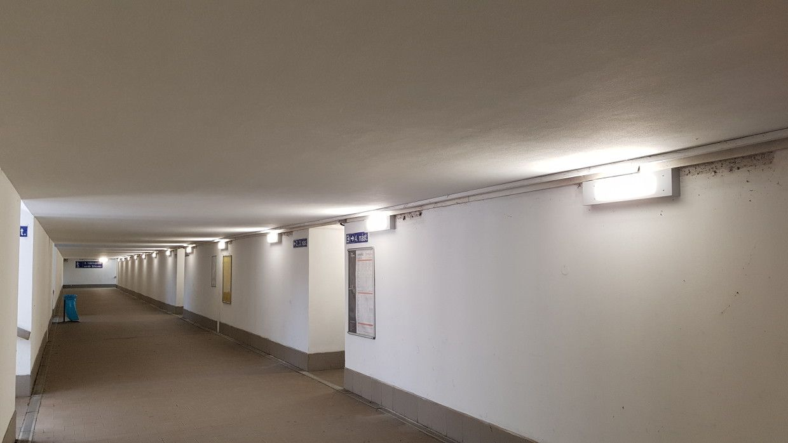
Podchod dnes.
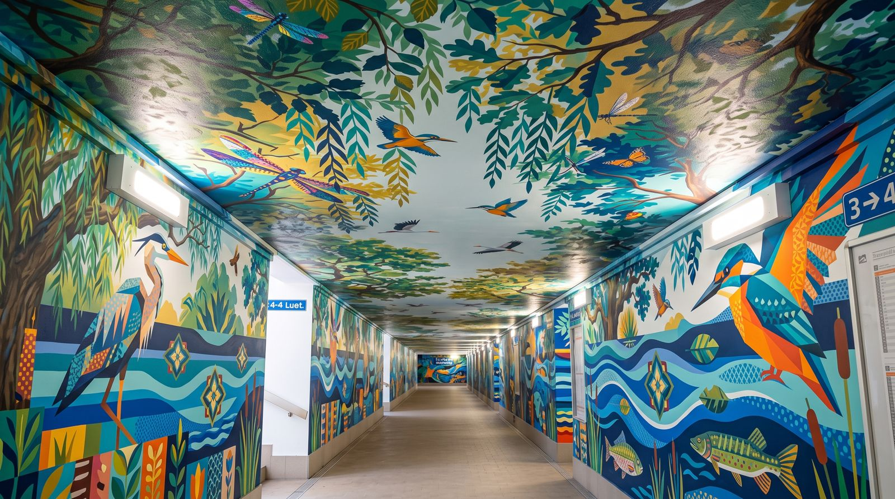
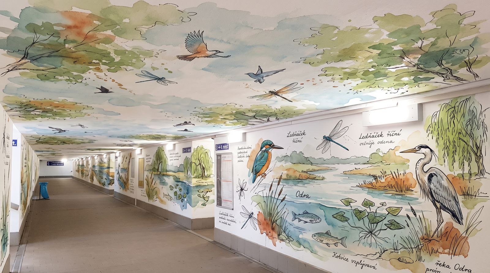
Dva oblíbené styly: barevný (vlevo) a přírodovědný deník (vpravo).
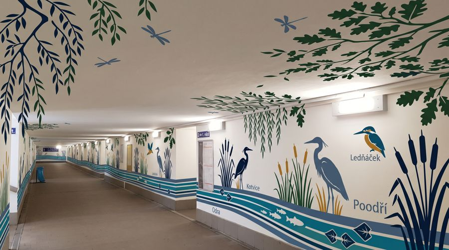
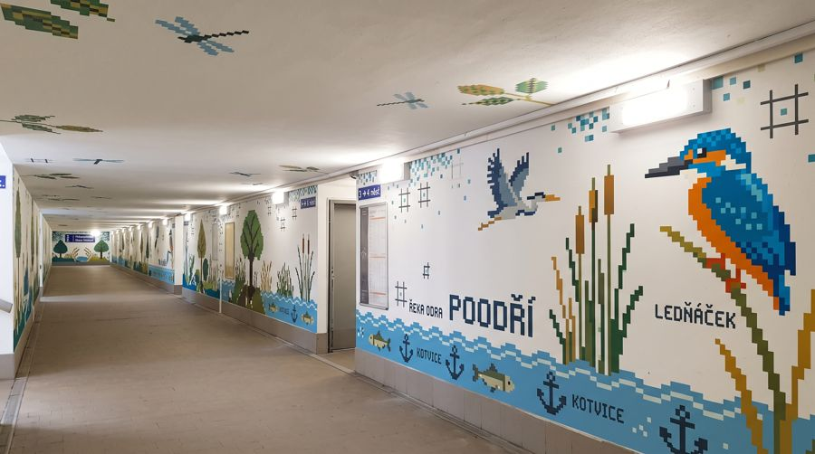
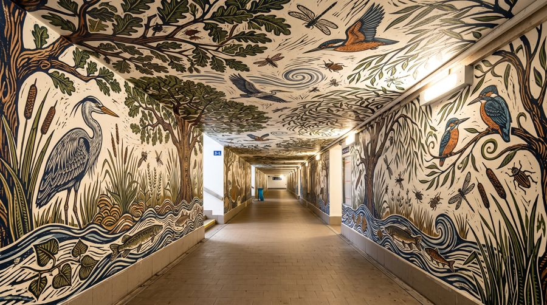
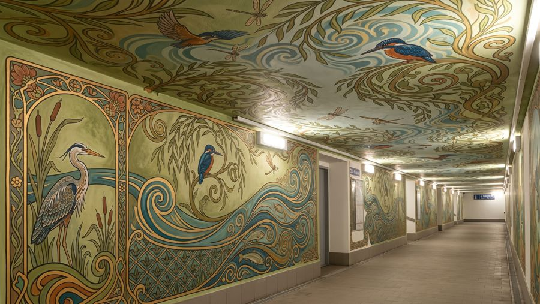
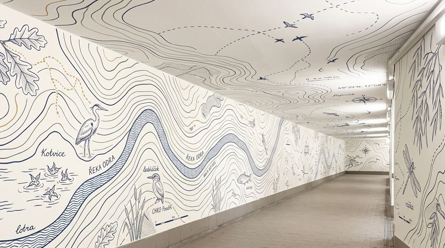
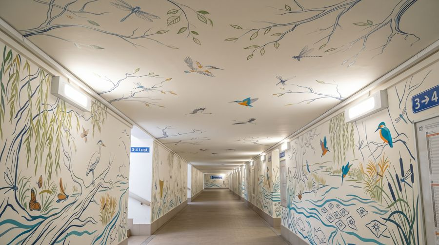
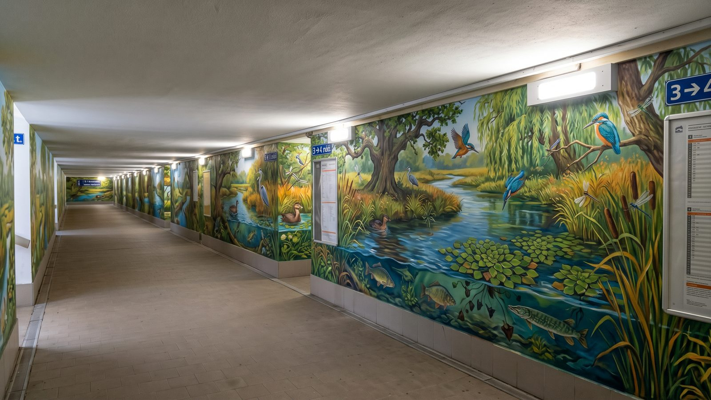
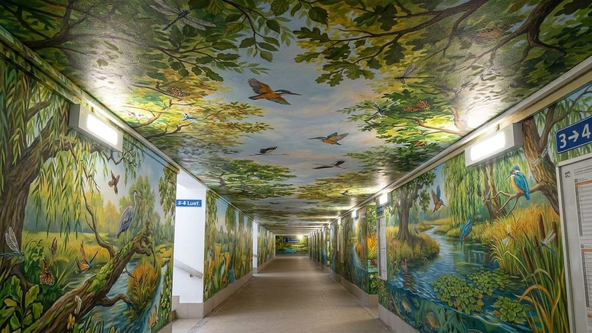
Další možné styly. Vizualizace jsou ilustrační, vytvořené pomocí AI. Malba stropu by se do rozpočtu nevešla. Stěny jsou navržené tak, aby se strop dal později doplnit, pokud se bude líbit.
Šedesát metrů bílých stěn, kterými denně prochází každý, kdo jede vlakem do školy nebo do práce. Velká malba na téma Poodří: tůně, lužní lesy, rozlivy Odry, čápi, ledňáčci, bobři, kvetoucí louky. Tedy příroda, kvůli které se do Studénky jezdí. Námět je daný, lidi by hlasovali jen o stylu. Ukázky stylů jsou níže. Malovat by mohli například studenti Fakulty umění Ostravské univerzity.
Proč ne letos: podchod patří Správě železnic a podle pravidel musí být projekt na majetku města. Město to tak potvrdilo, takže do roku 2027 to nejde.
Co dál: pravidla na rok 2028 se budou projednávat v srpnu 2027. Navrhuju městu, aby šly podávat i projekty na veřejně přístupném místě, které městu nepatří, pokud s tím vlastník písemně souhlasí. Jinde to už jde, například v Boskovicích, Vracově nebo Ratíškovicích.
Stromy na náměstí
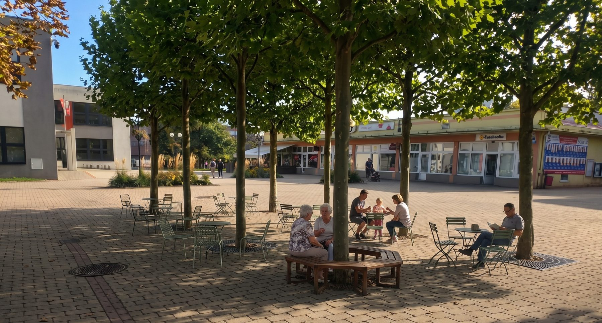
Vizualizace plné verze: stromy se stolky a lavičkami uprostřed náměstí Republiky.
Původní představa: stinné místo uprostřed náměstí, kde se dá posedět u stolku nebo na lavičce kolem stromu.
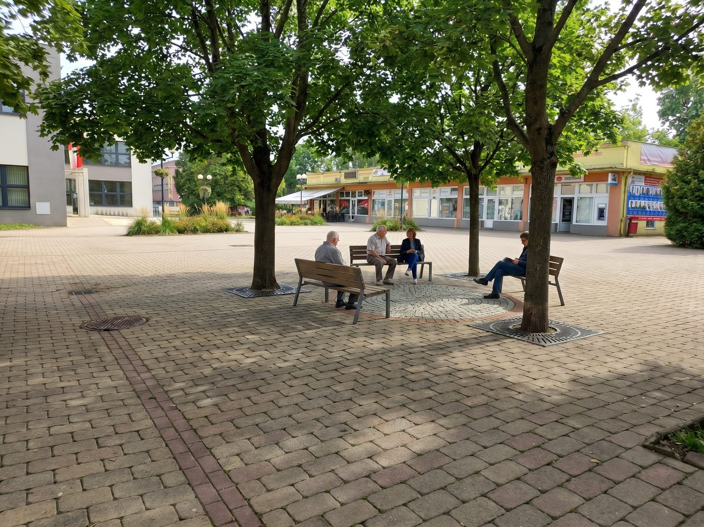
Vizualizace minimalistické verze: tři stromy a tři lavičky, zhruba 15 let po výsadbě.
Jako první krok jsem chtěl navrhnout jen tři vzrostlé stromy do dlažby se společným kořenovým prostorem a tři lavičky mezi nimi. I tahle minimalistická verze se ale do rozpočtu nevešla: orientační nabídka odborné firmy vyšla na zhruba 774 tisíc Kč s DPH, tedy dvojnásobek limitu, a to ještě bez projektové dokumentace. Většinu ceny tvoří zemní práce a kořenový prostor, samotné stromy jsou levné. Zkusím to probrat přímo s městem.
Co dál
- Napište do komentářů pod příspěvkem, které nápady a místa se vám líbí a které ne.
- Ověřuju pozemky a podmínky u města.
- Do 30. 11. podávám návrh a sháním 20+ podpisů, budu potřebovat vás.
Napadá vás něco lepšího? Napište to taky do komentářů.